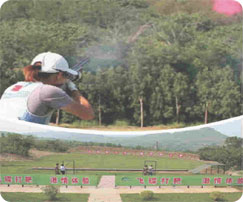

-

-
实弹模拟射击系统
“GF-1实弹射击模拟系统”，有固定靶和移动靶系统，由仿真轻武器、自动报靶系统、电源系统、激光信号发射系统、激光信号接收系统和智能云端系统组成，分手枪和步枪系列。
-
激光发射器
①武器采用仿真轻武器。仿真齐全的外观、结构和轻武器实物基本一致。
②仿真轻武器采用模拟真实子弹发射，子弹发射时枪口发声，射击时的射击时声音、后坐力等基本达到真实子弹射击效果。
③射击时通过内置或外置的轻武器内的激光信号发射系统，发射信号到固定靶上的激光信号接收系统，在显示终端上自动报靶由云端大数据软件处理系统通过传输信号进行统计评比成绩。
-
多变靶标射击系统Multiple target shooting system
智能多变靶的射击系统，由控制系统、靶板、固定靶板的靶杆、设置与靶板托架底部的转动轴和底座组成。系统由控制器和主机组成，控制器为无线发射装置，主机由接受装置和微电脑控制系统组成，控制靶标被击中时的落倒和起靶时间，省时省力。靶标多变化，可模拟抗战。靶标设为侵略者；可组织射击训练，靶标设为胸环靶，可进行精度射击：靶标设为野兽图像等，可实施模拟打猎。射击器械有95式、仿猎枪、未来科幻枪等，可供使用。
-
影响互动射击系统Video interattion shooting system
激光模拟射击系统，为训练提供了极低成本、高安全性的射击训练系统，为射击运动走向普及提供了技术上的支持。现在为满足普通群众对射击运动不断增加的需求，研发了多种射击游戏和趣味射击等节目。激光射击系统通过高清数字投影机把真实的各种环境逼真的投射到大屏幕上，无论是奔跑跳跃的猎物，变换不定的靶标，还是战场上蜂蜂涌的敌人，俯冲的战机，只要你紧握钢枪，把握时机快速射击，目标尽管躲避机警，但您的枪法更胜一筹。整个系统画面逼真，动感刺激，让每一位射手都能身临其境地感受到战场上的生离死别，战争残酷。狩猎场上的斗智斗勇，刺激惊险，打靶场上的冷静果断，胜利后的喜悦，为有品味的射击爱好者开辟了一片令人赏心悦目的休闲新天地，使久居闹市的人们找到了一种久违的大自然的真实感受。
-
智能光电飞碟射击系统Intelligent photoelectric UFO shooting system
- 
智能光电飞碟射击系统。是由北京中军创恒科技有限公司研发的一款整合和集成了目前模拟飞碟射击多种先进技术的新产品。它采用计算机、无线数据通讯网、激光通讯光导技术及电子控制技术于一体，使飞碟射击运动变为安全真实的射击体验系统，该产品与奥运会飞碟射击项目操作形式别无二致，仿真发射器，真实的抛碟机和飞碟，射手射出的不是霰弹，而是光弹，安全可靠，适合于旅游景区、公园、度假山庄等开展经营娱乐性的活动，还可用于国防教育基地民兵预备役人员，在校学生的军事技能的基本训练。
-
电子狩猎射击系统Electronic hunting shooting system
电子狩猎射击系统，采用计算机，无线数据通讯感应，激光通讯光导技术及电子控制技术于一体，为了使久居城市的人们更好的体验到户外追逐捕猎的乐趣，将多样化的数据通讯传感靶标（可设置为多种动物），分散放置于丛林的各个方位，需要体验者独自寻找到隐藏的靶标，并使用仿真发射器击中，体验高度仿真狩猎的乐趣。
-
快速射击模拟系统Fast fire simulation system
一名好的射手必须拥有精准的技术，快准狠才是高手，快速射击模拟系统，采用计算机，无线数据通讯感应，激光通讯光导技术及电子控制技术于一体，数据通讯传感靶面，根据灯光跳动的靶标（多种图案可设置），使用仿真激光发射器击中。不断跳动的靶标，声临其境的回声，让每一位射手体验酣畅淋漓的快感
-
战术射击模拟系统Tactical firing simulation system

战术射击是一种射击方式，区别于传统的静态射击，以抵近射击、格斗射击为代表，多用于小队渗透、反恐行动、要人保护、人质解救、掩体突入等近距离快速射击任务。战术射击的适用距离在7米之内，重点体现在射击的速度、实用性，对精准度的要求相对静态射击要差一些，在最低要求概率击中的基础上，通过大量练习来不断提高准确度，做到又快又准。